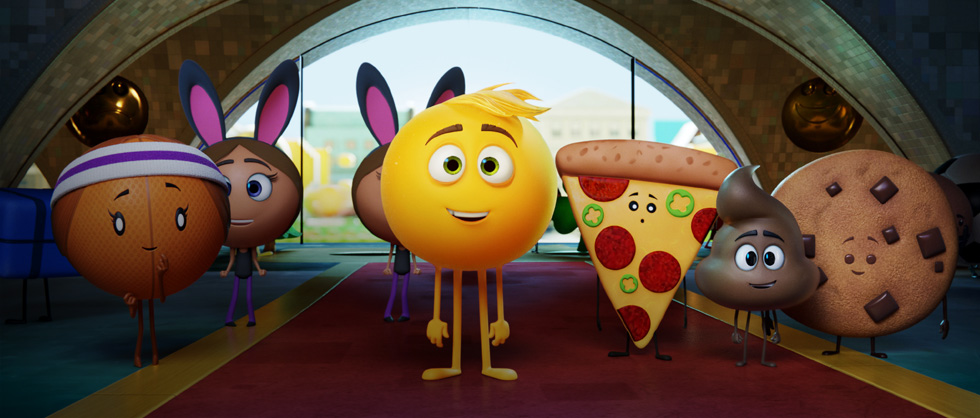
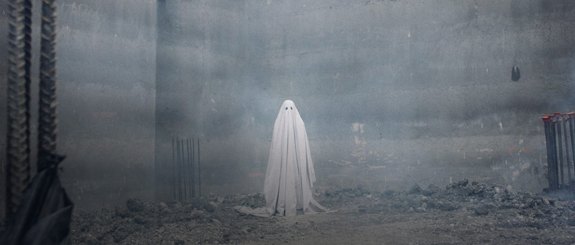
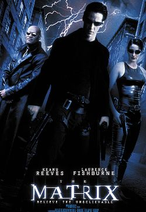

Book My Ticket

The Last Stand is a 2013 American action film directed by South Korean.

Detroit Home Movies is a year-long project to uncover and exhibit home movies.

This animated comedy takes place in Textopolis, a world inside a smartphone that's inhabited by various emojis.

A Ghost Story is a 2017 American supernatural drama film written and directed by David Lowery

The Matrix is a 1999 science fiction film written and directed by The Wachowskis, starring Keanu Reeves, Laurence Fishburne, Carrie-Anne Moss, Hugo Weaving, and Joe Pantoliano.

Their Finest is a 2016 British war comedy-drama film directed by Lone Scherfig and written by Gaby Chiappe, based on the 2009 novel Their Finest Hour and a Half by Lissa Evans.